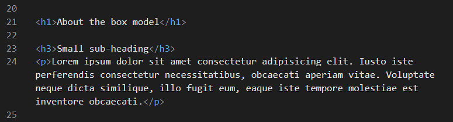
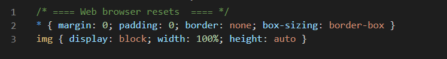
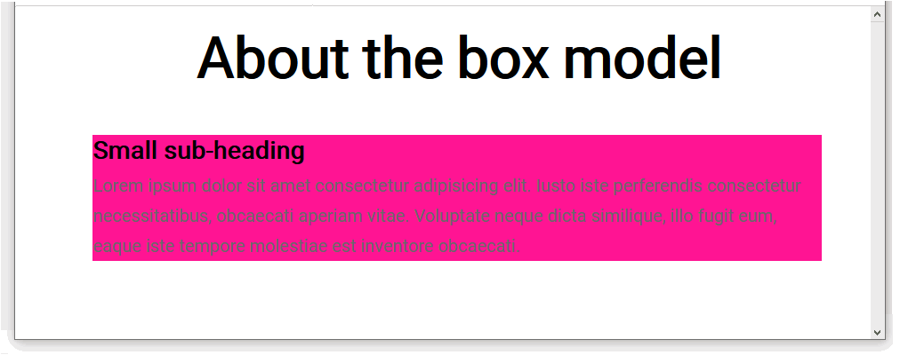
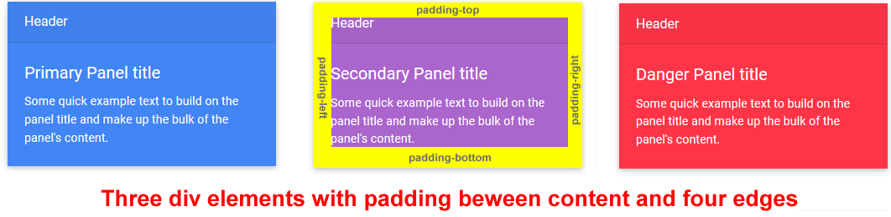
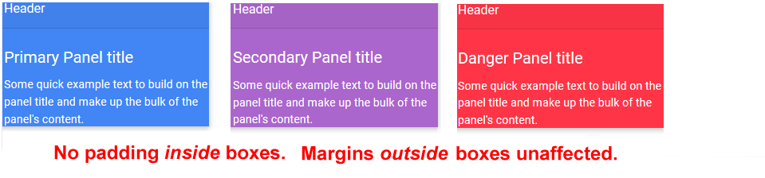
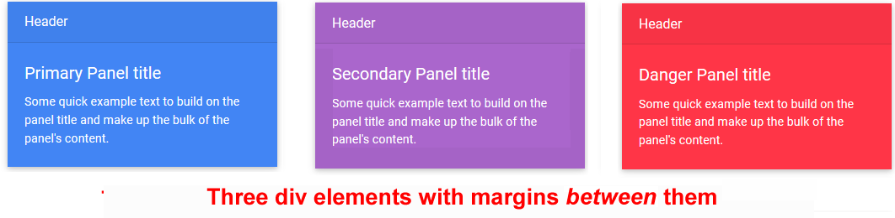
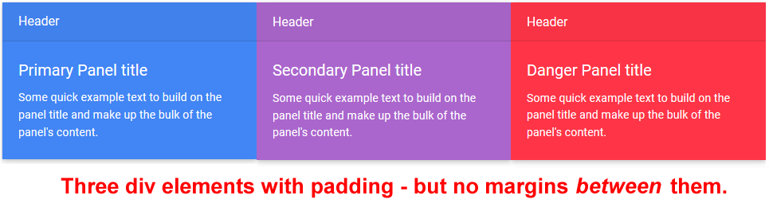

On a web page, every element can be considered as a rectangle or more simply as a ‘box’
An element could be a heading, text paragraph, image, video or whatever. HTML elements consist of some content inside HTML markup tags.
The following are all examples of HTML elements. They have both content and markup tags.
The words box model are used when describing the layout and visual design of HTML elements in a web page.
You can see an example of the box model in action by inspecting the home page from of AIB bank website. Notice how various page elements are grouped into rectangular blocks.
To sub-divide web page content into a layout of boxes, the HTML tag pair most commonly by web designers is the <div> ...</div> tag.
The above AIB home page contains 364 div elements.
Each of these grouping div elements and the smaller elements they contain follows the rules of the ‘box model’.
Downloading your sample files
Your first step is to download the files you need for this and the next two Tutorials.
The files will unzip into a sub-folder of your websites folder named lesson-4.
You should see six files: two HTML files, two CSS files and two images of image files.
sandbox-divs.html sandbox-divs.css page-9.html style-9.css student-computer-screen.jpg three-staff.png
Copy all six files from the lesson-4 sub-folder into your main websites folder.
You are now ready to work with the sample files you have downloaded.
The box model and the div tag
You are now ready to work with your downloaded sample files.
Start Visual Studio Code, and then open the following two files:
sandbox-divs.html sandbox-divs.css
In the web page file, you can HTML tags for three elements: a main heading, a sub=headng and paragraph text.

In the stylesheet file, you can see selectors and declaration blocks for elements from the web page. Below is the first of these three.
At the top of the CSS file are two lines of web browser resets. The second controls the display of images.
The first sets to zero all values of three properties that are particularly important when designing with the div tag: margins, paddings and borders.

The final property and value pair on this first line, box-sizing: border-box will be explained later in this Tutorial.
Switch back to the HTML file, and add the following opening and closing div tags as shown below.
Ensure you use the Tab key to indent the elements inside the div tag from the left edge of the Visual Studio Code window.
When finished, save your sandbox-divs.html file and view the result in your web browser.
As you can see, adding a pair of <div> ...</div> tag has no effect on the layout or visual appearance of a web page.
For this reason, the div tag in HTML is known as a ‘style-less‘ or ‘naked’ tag.
For the div element in the web page, let’s add a selector, and a background-color property and value.
Switch back to the CSS file, and copy-and-paste the following new comment line, selector and declaration at the bottom of the stylesheet.
/* Div selector with properties and values */div {
background-color: deeppink;
}
When finished, save your sandbox-divs.css file and view the result in your web browser.

The div element now has a deep pink background colour. Notice that no other part of the web page is affected. Only the div and its content.
Now we can move on to explore the three important div properties: padding, border and margins.
The padding property
Padding is the spacing between the content of an element and its four edges – top, bottom, left and right. You can think of padding as an element’s inside spacing.

Padding does not affect the spacing between an element and any other elements around it. See the examples below.

Padding is not just for div elements. You can also add padding around text and buttons.
Let’s add some padding to the four sides of your sample div element by copying-and-pasting the following.
When finished, save your sandbox-divs.css stylesheet and view the result in your web browser.
The div element in your web page now has some padding between its content and the four edges of the div.
CSS shorthand format
In the above simple example, all four padding values have the same value of 16px. So you can rewrite the four padding style rules into one CSS shorthand rule as follows.
div {
background-color: deeppink;
padding: 16px;
}
But sometimes padding values may be different on different sides of an element. For example copy-and-paste the following to your CSS stylesheet.
Is there a shorthand way of entering four different padding values for an element?
In CSS shorthand format, you could rewrite these four style rules on a single line as follows.
padding: 12px 32px 14px 16px;
But which one these four values refers for the top edge of the element? Or for the left edge?
The TROUBLE mnemonic
Web designers rely on a memory trick or mnemonic to help them remember which edges of an element are set by four padding values written on a single line.
The mnemonic is the word TROUBLE.
Or:
T(op), R(ight), OU B(ottom) and L(eft) E.
In your stylesheet, replace any text you have entered for the div selector with the following, more simple values. And then save the file.
div {
background-color: deeppink;
padding: 16px;
}
Next, let’s explore the border property of a div element.
The border property
Optionally, you can add borders to a div or other element. A border has three sub-properties as follows:
border-style (typically, solid)
border-width (like font-size, in measure pixels)
border-color
Let’s add four borders to our sample div element. Copy-and-paste the following to your stylesheet.
You can see that the borders have the same width on all four sides of the div. So you can rewrite the four border-width lines on a single line as follows.
You can further shorten the three lines of border properties and values as follows.
div {
padding: 12px;
border: 4pxsolidgreen;
}
When finished, save your sandbox-divs.css stylesheet and view the result in your web browser. Your web page should look as shown below.
The margin property
Margins are the spacing between an element and other elements around it. You can think of margin as an element’s outside spacing.

The greater the margin values of an element, the further it ‘pushes’ or ‘shoves’ other elements away from it. If div elements on the same web page had no margins, they would be no space between them. See the example below.

Let’s add some margins to our sample div element.
In your sandbox-divs.html web page, make a second copy of the div element as shown below.
Switch to your CSS file, and copy-and-paste the following.
In the above example, the top and bottom margins each have a value of 32px. And the left and right margins are zero.
As a general rule web designing web pages with div elements, you will most commonly set bottom margins, then top margins and rarely left and right margins.
When finished, save your sandbox-divs.css stylesheet and view the result in your web browser. Your web page should look as shown below.
Margins can have negative values
Unlike padding values and border width values, margins can have negative values.
For example, copy-and-paste the following to line to the bottom of the div declaration in your stylesheet, and save the file.
margin-left: -600px;
View the result in your web browser. It should look similar to that shown below.
You can now remove this negative margin.
Next, add the following new line to the bottom of the h1 declaration in your stylesheet, and save the file.
margin-top: -120px;
Your web page should now look as follows.
You will find negative margin values a useful feature when designing the layout of web pages.
You can now remove this negative margin, and resave your stylesheet.
Working with classes and class names
Modern web pages typically have many dozens of div elememts within them. Some of thsse divs will share common properties. Other divs willbe very different from each oher.
To design such web pages, you need to assign what are called classes to your div elements.
In effect, a class is a version of a div or other element.
You assign classes to divs in a web page by giving your div elements class names. You can see some examples below of class names assigned to divs in a HTML file.
Note that:
Class names are shown within a pair of doible quotes ("").
Class cannot have space withn them. You can type the hyphen (-) character to join words within a single class name.
An element canhave more than one class name. Separate the different class names with a sngle space.
If an element has more than one class name, the order of the names is not important.
You can delete the current content of your webpage and repalce it by copying-and-pasting the following:
You now ave four div elements, each with its own class name. Save your web page.
Working with parent-child selectors
Now you will apply four differen styles to your four div elemnts. This is possible only becse you have given each div lents a unique name of tis own
The visual effect you want to achice is displated below. Each div elements has a diffrent backgorrn color. Two ofthe divs have text parataphs ina dark colour. And two thers have text in white.
In your CSS file, remove and div styles. nw, copy-and-paste the followog.
You nownow applied the correct background colours. Note that you must type the dot (.) character to te sleector in a cSS file when that targes a an elemts with a class name in a HTML file.
Next, let's apply yhe colrs to paragras and heaidngs.
Parents, childred and decendents
Applying multiple classes
The box model: an overview
The four components of a web page element
In the box model, every HTML element can be viewed as containing the following items:
Content: The content of the box. This could be text, images, videos, icons and so on.
Margin: You can think of this as the box’s outside spacing. Margins separate the box from any surrounding elements on the same web page.
The greater the margin values of a box, the futher it "pushes" or "shoves" other elements away from it. See the example below.
Border: Optionally, you can add borders to any box, using your chosen colour, thickness and style.
Padding: You can think of this as the box's inside spacing. You will typically set padding values where you want to add some spacing between the content of a box and its four edges - top, bottom, left and right. See the examples below.
For padding, borders and margins, you can use the same value for all four box edges, or assign different values to each individual edge.
Block-level and inline-level elements
Before continuing, you need to add the box-sizing: border-box rule to the browser resets section at the top of your CSS file:


 At the top of the CSS file are two lines of web browser resets. The second controls the display of images.
At the top of the CSS file are two lines of web browser resets. The second controls the display of images.
 Ensure you use the Tab key to indent the elements inside the div tag from the left edge of the Visual Studio Code window.
Ensure you use the Tab key to indent the elements inside the div tag from the left edge of the Visual Studio Code window.